Branding / System
Print
Iconography, Communication Design, Social Design, Way-Finding, User Research
Spring 2016
“Paint the Pavement” is an organization whose goal is to bring communities together in lower income areas by building connections between artists, organizations and neighborhood residents.
Our challenge was to assist users in applying for and understanding the large application process that the organization requires as well as attracting and informing neighborhood communities.
The first two deliverables are meant for persons of interest in the community. They are how I planned to draw users in as well as key points for promoting the organization.
The large pamphlet is the main part of my system, it contains information on how one applies, as well as reminders and guides to keep you organized.
The overall identity of the system has been inspired by the Pittsburgh map as well as road design. This secondary component has also been utilized as a way finding guide for users going through the system.
The last part of the system is the application - it contains the same brand guidelines as the rest of the system, however, it has been simplified so users are able to focus on the application - not the visual elements.
Inspired by the design of the roads, hence the stretched out “e”, the word mark was the first piece of the system that I created.
The word mark’s style later influenced the entire body of work created for the project - including the color and paper choice, as well as the street graphics strategically placed throughout.
In order to add supporting visual elements in an effective way, I placed the road graphics throughout the system in a way that would allow them to guide ones’ eyes throughout the individual pieces.
BACK TO TOP
SIMILAR PROJECTS: OCD, AIGA Design Census, Lower 9th Ward +10